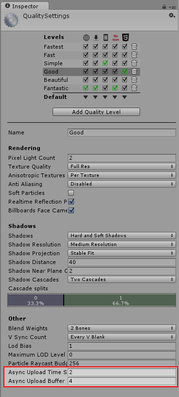

Asynchronous Texture Upload
Asynchronous Texture Upload enables asynchronous loading of Texture Data from disk and enables time-sliced upload to GPU on the Render-thread. This reduces wait for GPU uploads in the main thread. Async Texture Upload will automatically be used for all Textures that are not read-write enabled, so to use this feature no direct action is required. You can however control some aspects of how the async upload operates, and so some understanding of the process is useful to be able to use these controls.
When the project is built, the texture data of asynchronous uploadable textures are stored in as streaming resource files and are loaded asynchronously.
Simple & Full Control Over Memory / Time-Slicing
A single ring-buffer is reused to load the texture data and upload it to the GPU, which reduces the amount of memory allocations required. For example, if you have 20 small textures, Unity will set up an asynchronous load request for those 20 textures in one go. If you have one huge texture, Unity will request only one.
If the buffer size is not large enough for the textures being requested, it will automatically resize to accomodate, however it is always optimal to try to set the size to fit the largest sized texture that you will be uploading from the outset, so that the buffer does not need to resize for each new larger texture it encounters.
The time spent on texture upload each frame can be controlled, with larger values meaning the textures will become ready on the GPU sooner but with the overhead of more CPU time being used during those frames for other processing. This CPU time is only used if there are textures waiting in the buffer to be uploaded to the GPU.
The size of the buffer and time-slice can be specified through the Quality settings:

Async Texture Upload Scripting API
We provide the ability to control the Buffer Size and the Time-Slice value from script.
Time-Slice
See Script Ref: QualitySettings.asyncUploadTimeSlice.
Sets the Time-Slice in milliseconds for CPU time spent on Asynchronous Texture Uploads per frame. Depending on the target platform and API, you may want to set this. Time is only spent on the function call if there are textures to upload, otherwise it early-exits.
Buffer Size
See Script Ref: QualitySettings.asyncUploadBufferSize
Set the Ring Buffer Size for Asynchronous Texture Uploads. The size is in mega-bytes. Ensure that you set a reasonable size depending on the Target platform. Also please ensure that it is always sufficient to load any huge texture in your games. For example if you have a Cubemap of size 22MB and if you set the size of the RingBuffer to 16MB, the App will automatically resize the Ringbuffer to 22MB while loading that scene.
Notes
For non-read/write enabled textures, the TextureData is part of resS (Streaming Resource) and upload now happens on Render-Thread. Availability of Texture is guaranteed during call to AwakeFromLoad just as before, so there are no changes in terms of order of loading or availability of Textures on Rendering.
For other types of texture loading, such as read/write enabled textures, textures loaded directly with the LoadImage(byte[] data) function, or loading from the Resources folder, the Asynchronous buffer loading is not used - the older Synchronous method is used.